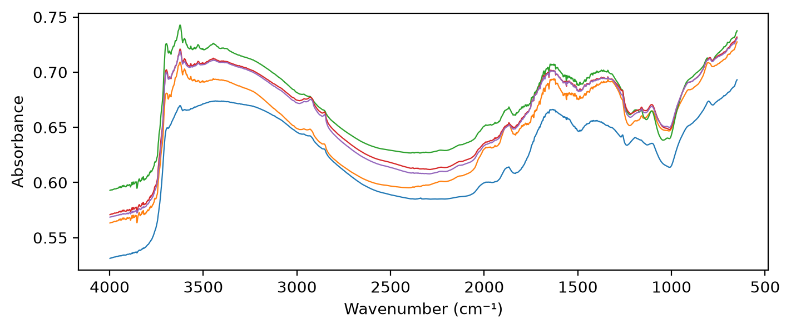

from fastcore.test import *
import matplotlib.pyplot as pltFukushima data
Load the Fukushima MIR spectra and soil properties as a
Spectra, for the current sample selection
The Fukushima data is not public. The cells that read it are marked #| fukudata, and nbdev-test skips them unless you run nbdev-test --flags fukudata. The outputs on this page come from a local run.
Data location
fuku_path
def fuku_path()->pathlib.Path: # Folder holding the Fukushima dataThe fukushima folder of data_path()
data_path
def data_path()->pathlib.Path: # Folder holding the data shared by the soilspec projectsThe SOILSPEC_DATA folder if that variable is set, else data/ in the soilspec workspace
The soilspec workspace keeps the data in data/, beside the project folders. Set SOILSPEC_DATA to use a folder elsewhere. The Fukushima data is in its fukushima folder:
assert fuku_path().is_dir()
sorted(o.name for o in fuku_path().iterdir())['MIRS_rawData', 'reference']Soil properties
load_props
def load_props()->pandas.DataFrame: # One row per sample, indexed by sample IDSoil properties of the Fukushima samples
load_props reads the laboratory measurements in WetData_2013_2023.csv. Sample IDs are strings, as in Spectra.sample_ids. Soil property columns start with soil_, for example exchangeable potassium (soil_ex_K2O), CEC (soil_CEC) and carbon (soil_C):
props = load_props()
props.shape, [c for c in props.columns if c.startswith('soil_')]((2003, 37),
['soil_harvest_date',
'soil_water_soluble_K2O',
'soil_available_K2O',
'soil_ex_K2O',
'soil_pH(H2O)',
'soil_C',
'soil_N',
'soil_CN_ratio',
'soil_CEC',
'soil_MgO',
'soil_CaO',
'soil_P_absorption_coefficient'])Exchangeable potassium, soil_ex_K2O, is in mg K₂O per 100 g of dry soil. OSSL gives Kex in cmolc/kg. 1 cmolc/kg of K is 391 mg K per kg, or 39.1 mg K per 100 g. As K₂O (94.2 g/mol, two K per molecule), that is 47.1 mg K₂O per 100 g:
kex = props['soil_ex_K2O'] / mg_k2o_per_cmolc
kex.describe().round(2).to_dict(){'count': 1998.0,
'mean': 0.74,
'std': 0.48,
'min': 0.06,
'25%': 0.41,
'50%': 0.63,
'75%': 0.93,
'max': 4.99}Sample selection
The selection is provisional. It can change after review with the Fukushima colleagues.
It starts from the 1,592 samples of the earlier Cs137 ratio study, listed in reference/cs137_ratio_metadata.csv. Results stay comparable with that study. 1,401 of them have Thermo OMNIC .spa files. The samples in excluded are left out while any of their scans is in doubt:
sample_ids
def sample_ids()->numpy.ndarray: # Sample IDs, in increasing orderIDs of the samples in the current selection
spa_files
def spa_files()->dict: # Sample ID: `.spa` files of its replicatesThe .spa files of the Fukushima soil samples, by sample ID
sample_ids applies the selection. Most samples have four replicates, a to d:
ids = sample_ids()
files = spa_files()
test_eq(len(ids), 1401 - len(excluded))
len(ids), pd.Series([len(files[i]) for i in ids]).value_counts().to_dict()(1389, {4: 1382, 3: 5, 1: 1, 2: 1})The earlier Cs137 ratio study split its samples into training and test sets. Its test set is the fixed Fukushima test set of this project. cs137_split keeps the samples of each set that are in the current selection:
cs137_split
def cs137_split()->tuple: # (training IDs, test IDs), each in increasing orderTraining and test sample IDs of the Cs137 ratio study, within the current selection
train_ids, test_ids = cs137_split()
test_eq(len(train_ids) + len(test_ids), len(ids))
len(train_ids), len(test_ids)(1048, 341)Each folder of .spa files is one measurement batch. sample_batches numbers the batches in the sorted order of their folders:
sample_batches
def sample_batches(
ids, # Sample IDs
)->numpy.ndarray: # Batch label of each sample, such as 'batch 1'The measurement batch of each sample
pd.Series(sample_batches(ids)).value_counts().to_dict(){'batch 2': 854, 'batch 1': 535}Bruker spectra
377 of the samples were also scanned on a Bruker spectrometer: the 316 Kazu samples (IDs 2600 and up) and 61 others. The Bruker spectra are CSV exports of wavenumber and absorbance, one file per replicate, named such as 2600a.csv or 1624_1.csv. bruker_files lists them by sample ID:
load_bruker
def load_bruker(
wns, # Wavenumbers to interpolate onto, in cm⁻¹, in increasing order
ids:NoneType=None, # Sample IDs to load; defaults to every sample in `bruker_files()`
)->soilspecdata.types.Spectra: # One spectrum per sample, with the soil properties in `source`Load the Bruker spectra, averaging the replicates of each sample
bruker_files
def bruker_files()->dict: # Sample ID: CSV files of its replicatesThe CSV exports of the Bruker spectra of the Fukushima soil samples, by sample ID
The Bruker files cover 498 to 3997.5 cm⁻¹, every 2.05 cm⁻¹. They end just below the 3998 cm⁻¹ of shared_wns, so comparisons with Bruker spectra stop at 3996 cm⁻¹. All 377 samples also have Thermo .spa files:
bfiles = bruker_files()
paired = sorted(set(bfiles) & set(spa_files()), key=int)
br = load_bruker(np.arange(650, 3997, 2), paired[:3])
len(bfiles), len(paired), sum(int(i) >= 2600 for i in paired), br.spectra.shape(377, 377, 316, (3, 1674))Loading
/opt/hostedtoolcache/Python/3.12.15/x64/lib/python3.12/site-packages/fastcore/docments.py:478: UserWarning: docments unavailable for load_fuku: ValueError: The truth value of an array with more than one element is ambiguous. Use a.any() or a.all()
warnings.warn(f'docments unavailable for {self.nm}: {type(e).__name__}: {e}')load_fuku
load_fuku(wns=array([ 650, 652, 654, ..., 3994, 3996, 3998], shape=(1675,)), ids=None) -> soilspecdata.types.SpectraLoad the Fukushima spectra, averaging the replicates of each sample
load_fuku interpolates each .spa file onto shared_wns, 2 cm⁻¹ from 650 to 3998 cm⁻¹, then averages the replicates of each sample. The rows follow sample_ids():
fuku = load_fuku()
test_eq(fuku.spectra.shape, (len(ids), len(shared_wns)))
test_eq(fuku.sample_ids, ids)
fuku.spectra.shape, fuku.measurement_type((1389, 1675), 'abs')load_replicates keeps each replicate as its own spectrum instead of averaging them. sample_ids repeats each sample’s ID once per replicate. Differences between the replicates of a sample come from the measurement, not from the soil:
/opt/hostedtoolcache/Python/3.12.15/x64/lib/python3.12/site-packages/fastcore/docments.py:478: UserWarning: docments unavailable for load_replicates: ValueError: The truth value of an array with more than one element is ambiguous. Use a.any() or a.all()
warnings.warn(f'docments unavailable for {self.nm}: {type(e).__name__}: {e}')load_replicates
load_replicates(wns=array([ 650, 652, 654, ..., 3994, 3996, 3998], shape=(1675,)), ids=None) -> soilspecdata.types.SpectraLoad every replicate of the Fukushima samples as its own spectrum
reps = load_replicates(ids=ids[:5])
test_eq(len(reps.sample_ids), sum(len(files[i]) for i in ids[:5]))
test_close(np.stack([reps.spectra[reps.sample_ids == i].mean(0) for i in ids[:5]]), load_fuku(ids=ids[:5]).spectra)The CO₂ band, around 2300–2400 cm⁻¹, is still in the spectra:
fig, ax = plt.subplots(figsize=(8, 3))
ax.plot(fuku.wavenumbers, fuku.spectra[:5].T, lw=0.8)
ax.invert_xaxis()
ax.set_xlabel('Wavenumber (cm⁻¹)'); ax.set_ylabel('Absorbance');
Spectra.xy returns the spectra and targets of the samples that have both:
X, y, xy_ids = fuku.xy('soil_ex_K2O')
X.shape, y.shape((1388, 1675), (1388, 1))